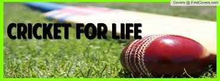
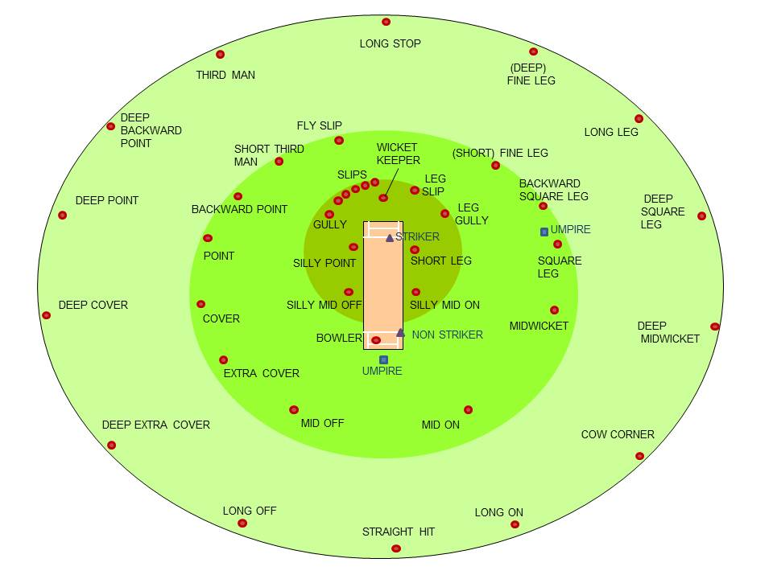
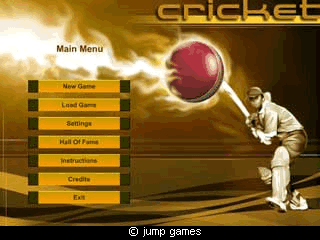
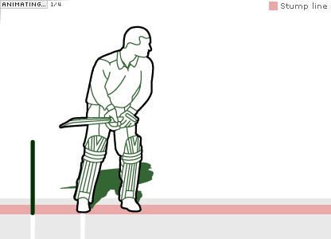

RULES:
- Each team is made up of 11 players.The bowler must bowl 6 legal deliveries to constitute an over.
- A game must have two umpires stood at either end of the wicket. The umpires then must count the number of balls in the over, make decisions on whether the batsmen is out after an appeal and also check that the bowler has bowled a legal delivery.
- A batsmen can be given out by either being bowled( the ball hitting their stumps),caught(fielder catches the ball without it bouncing), Leg Before Wicket (the ball hits the batsmen’s pads impeding its line into the stumps), stumped (the wicket keeper strikes the stumps with their gloves whilst the batsmen is outside of their crease with ball in hand), hit wicket (the batsmen hits their own wicket), Handled ball ( the batsmen handles the cricket ball on purpose), timed out (the player fails to reach the crease within 30 seconds of the previous batsmen leaving the field), hit ball twice (batsmen hits the cricket ball twice with their bat) and obstruction ( the batsmen purposely prevents the fielder from getting the ball).
- Test cricket is played over 5 days where each team has two innings (or two chances to bat).
- The scores are then cumulative and the team with the most runs after each innings is the winner.
- One Day cricket in played with 50 overs. Each team has 50 overs to bat and bowl before swapping and doing the previous discipline. The team with the most runs at the end of the game wins.
CRICKET FIELD

VIDEOS:
TIPS FOR PLAYING CRICKET
CRICKET MATCHES

